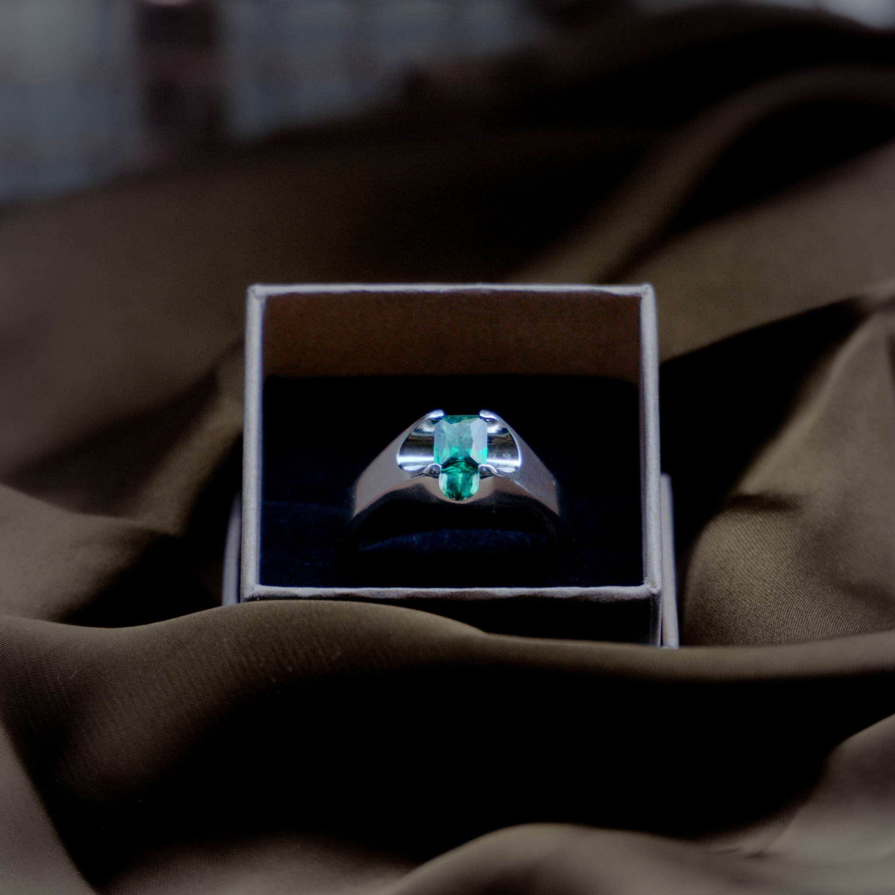
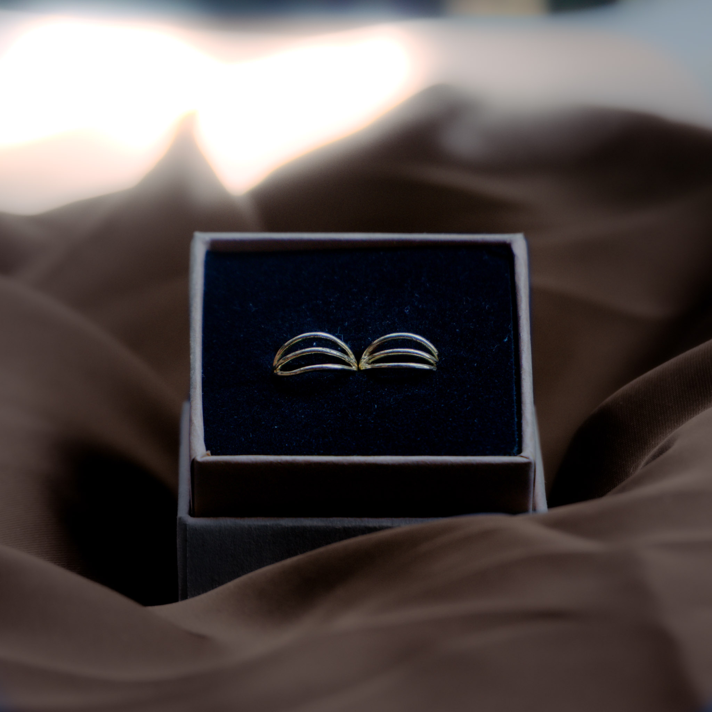
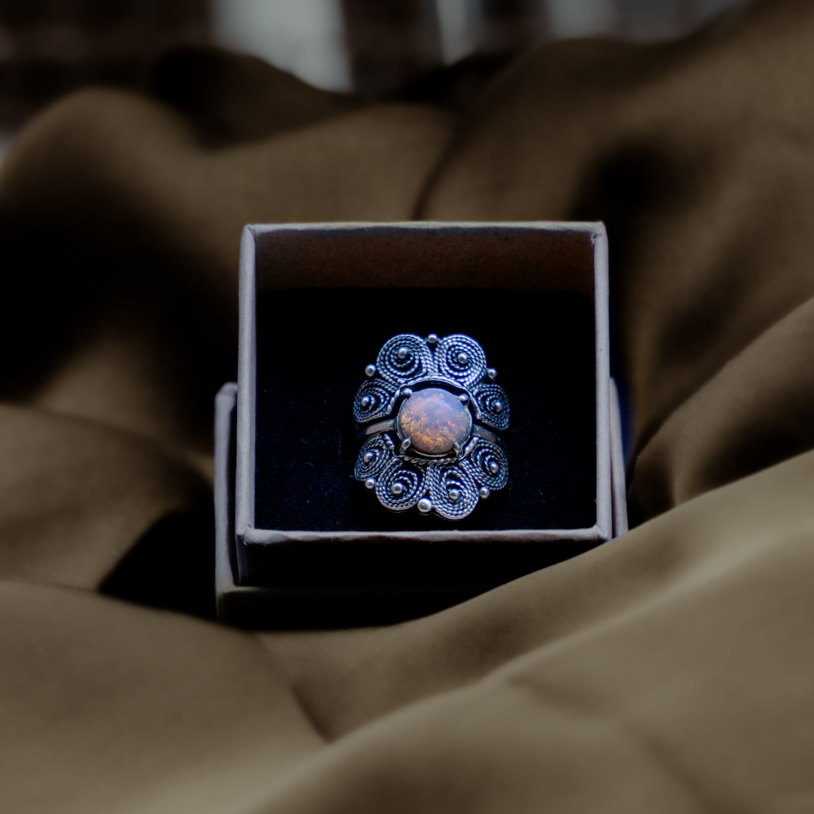
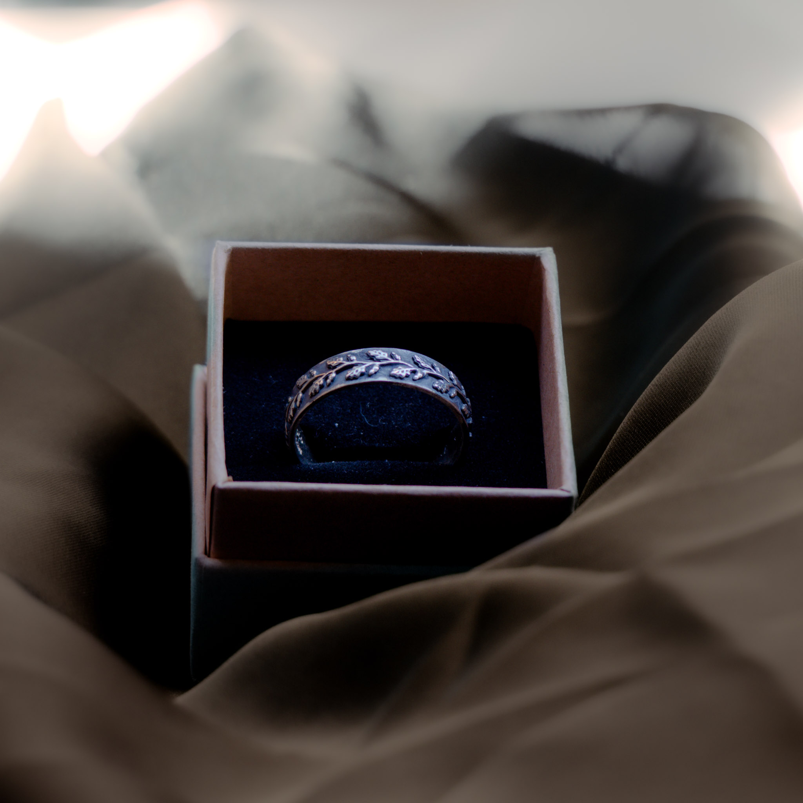
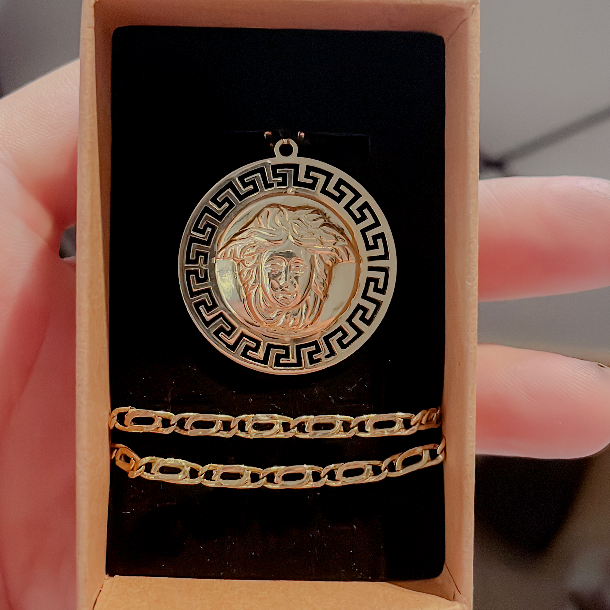

Gallery
Crafted with quality materials: 925 sterling silver, 9k, 14k and 18k gold, paired with carefully selected gemstones.
Made-to-Order
I create made-to-order pieces tailored for you. I can also work with your personal gold and bring new life into it. DM If intereste.
Repair
Efficient & quality polishing and repairs .
Gallery


Made-to-Order




Repair

About
Hi, I'm Rune Alexander, the goldsmith and creator behind RAR Studios.
I am a trained goldsmith, having completed my education in Norway in 2019. Others have often described my personal style as "Bohemian Chic", although I enjoy exploring many different styles and techniques rather than limiting myself to just one.
I have a particular interest in heritage jewellery and the stories behind traditional craftsmanship. Lately, I've been exploring Nordic and Sámi traditions, as well as Norse mythology, and finding ways to learn from these rich cultural histories.
Alongside goldsmithing, I also trained in Swedish glassblowing. In my early years, I travelled extensively, taking on different glassblowing projects and experiences around the world.
Today, I run the studio LA Coleccion Escondida in Barcelona while working towards growing RAR Studios and developing my own creative direction.
RAR Studios offers repairs and polishing, custom commissions, and a curated selection of ready-made pieces. I also welcome the opportunity to work with clients' own gold, including inherited or sentimental jewellery, giving existing materials a new life. Every piece is handled personally in my Barcelona workshop.
Thank you to everyone who supports independent craftsmanship and follows along as RAR Studios grows.